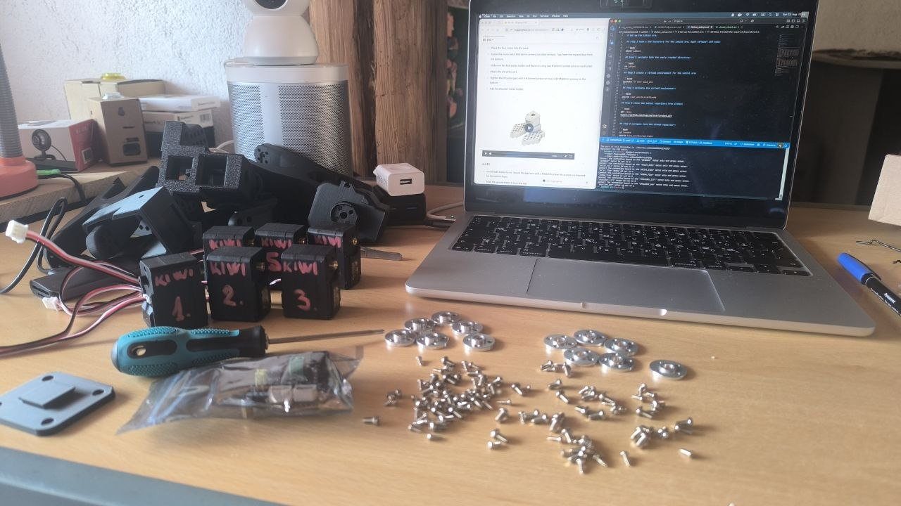
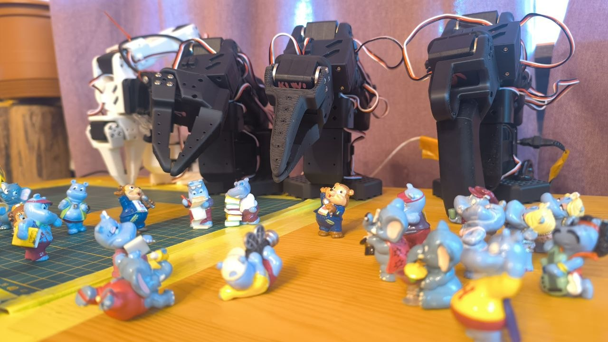

Technical Deep Dive: LeKiwi Arm Assembly & Checkpoint Transfer
Setup, port discovery, motor initialization, calibration, teleoperation testing, and an ACT checkpoint-transfer test — validating both LeKiwi-class follower arms ahead of the mobile base delivery
Hardware
- Arm platform: two SO-101-class follower arms built in this pass —
my_kiwi_arm_1(near-term LeKiwi build) andmy_kiwi_arm_2(held in reserve for the future XLeRobot second-arm upgrade) - Actuators: Feetech STS3215 smart servos, 12 total (6 per arm)
- Controllers: 2× Waveshare Bus Servo Adapter (A), jumper set to position B (direct USB↔servo mode)
- Leader arm: reused from the existing SO101 setup — no new leader built for this pass
- Compute: same MacBook (Apple Silicon) used for SO101 work, PyTorch's MPS backend
- Cameras: main (640×480) + gripper (320×240), MJPG, same configuration as the SO101 setup

Photo of the two new SO-101 follower arms prior to assembly
Environment Setup
A separate project directory, virtual environment, and lerobot clone, kept independent from the SO101 install so version or dependency changes on one side can't affect the other:
mkdir LeKiwi
cd LeKiwi
python3 -m venv kiwi
source kiwi/bin/activate
git clone https://github.com/huggingface/lerobot.git
cd lerobot
pip install -e ".[feetech]"Note: venv folder is named kiwi, not kiwi_env — confirmed. A separate dependency-install step in the notes references cd projects/lekiwi/lerobot and pip install -r docs-requirements.txt, which doesn't match the clone path above and isn't a standard LeRobot requirements file — still flagged as needing a check, pending confirmation of what was actually run there.
Port Discovery & Motor ID Assignment
| Arm | Port | Role |
|---|---|---|
my_kiwi_arm_1 | /dev/tty.usbmodem5B140288161 | Current LeKiwi build |
my_kiwi_arm_2 | /dev/tty.usbmodem5B141134291 | Reserved — future XLeRobot second arm |
Each bus was configured independently, motor-by-motor, via lerobot-setup-motors:
lerobot-setup-motors \
--robot.type=so101_follower \
--robot.port=<port>Same ID convention applied to both arms (assigned in this order, one motor connected at a time): gripper=6, wrist_roll=5, wrist_flex=4, elbow_flex=3, shoulder_lift=2, shoulder_pan=1.
Hardware lesson carried in from assembly: the initial port-detection attempts failed with no difference detected between before/after USB states. Traced to a bad cable batch — 5 of 5 first-tested cables failed to carry data — resolved with a known-good cable borrowed from the SO101 setup. Worth treating that cable batch/supplier with suspicion going forward.
Calibration
Both arms calibrated via lerobot-calibrate. wrist_roll is intentionally excluded from the min/max sweep — it's a continuous-rotation joint with no natural end stops, so it doesn't get bounded calibration values the way the other five joints do.
my_kiwi_arm_1 — /dev/tty.usbmodem5B140288161
| Joint | Min | Pos | Max |
|---|---|---|---|
| shoulder_pan | 697 | 2058 | 3434 |
| shoulder_lift | 875 | 881 | 3342 |
| elbow_flex | 840 | 3054 | 3062 |
| wrist_flex | 786 | 2832 | 3293 |
| gripper | 1409 | 1439 | 2929 |
my_kiwi_arm_2 — /dev/tty.usbmodem5B141134291
| Joint | Min | Pos | Max |
|---|---|---|---|
| shoulder_pan | 701 | 2011 | 3430 |
| shoulder_lift | 990 | 997 | 3395 |
| elbow_flex | 637 | 2931 | 2931 |
| wrist_flex | 839 | 2881 | 3201 |
| gripper | 1545 | 1576 | 3079 |
Flag: my_kiwi_arm_2's elbow_flex shows Pos and Max identical (2931/2931), unlike every other joint on both arms where Pos sits away from both bounds. Possibly the joint was left at full extension when the recording stopped rather than a true resting position — worth re-running this specific joint's calibration to confirm before relying on it for training data.
Teleoperation Testing
Both arms tested independently as followers, with the SO101 leader arm (/dev/tty.usbserial-11310) driving each in turn:
| Metric | my_kiwi_arm_2 | my_kiwi_arm_1 |
|---|---|---|
| Duration | 113.0 s | 94.3 s |
| Effective cadence | 59.96 Hz | 59.97 Hz |
| Ticks over budget | 0 / 6772 (0.0%) | 0 / 5652 (0.0%) |
| Work mean / worst | 4.1 ms / 4.4 ms | 4.1 ms / 4.4 ms |
| Pacing headroom | ~12.6 ms slept/tick avg | ~12.6 ms slept/tick avg |
Both runs held a clean 60 Hz target with zero over-budget ticks and comfortable pacing headroom — the loop is nowhere near saturated. The teleop step itself dominates the per-tick cost (~75% of work), well ahead of observation (~24%) and sending (<1%). No timing or hardware issues on either arm under teleoperation.

Photo of the two new SO-101 follower arms after successful testing.
ACT Checkpoint-Transfer Test
Rather than a fresh training run, this test reused the existing so101_bgdiv_v1 checkpoint — the background-diversity-trained ACT policy from the SO101 line — directly on my_kiwi_arm_2, with no retraining, to see whether an already-trained policy transfers onto new physical hardware:
lerobot-rollout \
--robot.type=so101_follower \
--robot.port=/dev/tty.usbmodem5B141134291 \
--robot.id=my_kiwi_arm_2 \
--robot.cameras='{"main": {"type": "opencv", "index_or_path": 0, "width": 640, "height": 480, "fps": 30, "fourcc": "MJPG"}, "gripper": {"type": "opencv", "index_or_path": 1, "width": 320, "height": 240, "fps": 30, "fourcc": "MJPG"}}' \
--policy.type=act \
--policy.pretrained_path=/Users/r/Documents/Projects/lerobot/outputs/train/so101_bgdiv_v1/checkpoints/last/pretrained_model \
--policy.input_features='{"observation.state": {"type": "STATE", "shape": [6]}, "observation.images.main": {"type": "VISUAL", "shape": [3, 480, 640]}, "observation.images.gripper": {"type": "VISUAL", "shape": [3, 240, 320]}}' \
--policy.output_features='{"action": {"type": "ACTION", "shape": [6]}}' \
--policy.device=mps --strategy.type=base --fps=30 --duration=20 \
--interpolation_multiplier=5 \
--task="Pick up the object and place it in the box"Result: unsatisfying — consistent with expectations for a straight checkpoint transfer rather than a real regression. The so101_bgdiv_v1 policy was trained on a specific arm unit, workspace, and set of backgrounds; a different physical arm (even same servo model), different calibration curve, and an untested workspace/lighting setup are exactly the conditions the background-diversity work already flagged as failure-prone.
Note on the task string: this run's --task was changed to "place it in the box", differing from the original SO101 dataset's "place it in the tape roll." Since ACT has no language-conditioning pathway (confirmed earlier via source inspection during the poisoning investigation), this string is a label only — it has no effect on the policy's actual behavior at inference time. Worth keeping in mind so this run isn't mistaken for evidence of task generalization; it isn't testing that at all.
Key Engineering Decisions & Lessons
Bad cable batch was the real blocker, not the software. The initial "port not found" failure looked like a driver or lerobot issue but traced entirely to faulty USB cables — 5 of 5 first-tested units failed to carry data. Worth stress-testing new cables against a known-good port before assuming a software problem.
Checkpoint transfer is a hardware-validation test, not a shortcut to a trained LeKiwi policy. Running an existing checkpoint on new hardware is a fast, cheap way to confirm the pipeline (ports, cameras, control loop, inference) works end-to-end — but an unsatisfying result here says nothing about whether ACT itself will work well on LeKiwi once trained on LeKiwi-specific data. The two questions are independent.
The ACT task string is inert. Changing it between runs doesn't change behavior — only useful as a human-readable log label, and a reminder not to over-interpret prompt changes as functional changes on this architecture.
Current Limitations (Next Iteration Targets)
- No LeKiwi-specific training data yet: the checkpoint-transfer test confirms hardware/pipeline function but doesn't substitute for the planned ACT validation pass — recording fresh demonstrations on the actual LeKiwi arm remains the next real step
my_kiwi_arm_2elbow_flex calibration should be re-verified before it's used for any real data collection, given the Pos/Max overlap noted above- Environment/setup script inconsistencies (venv naming, dependency-install path) should be cleaned up and re-verified before treating this as a repeatable setup procedure for future arms
- Mobile base still pending (expected mid-September) — wheel motor IDs (7–9) and the full combined arm+base configuration remain outstanding